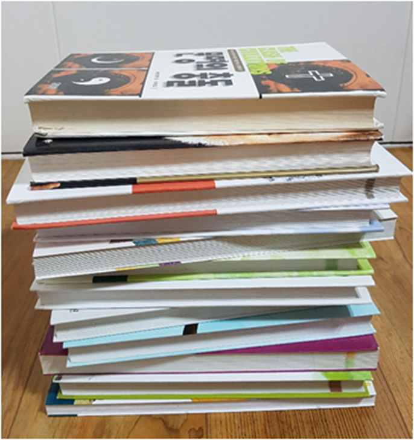

아동 문학의 의의
인간은 책을 통해 과거의 역사와 인간의 삶을 알게 되고, 새로운 정보나 지식, 정서 등 직･간접적으로 습득할 수 있다. 문학이란 작가가 인간의 세계를 그린 작품이다. 문학은 글자를 읽는 책이 아니라 읽어서 들려주는 소리를 귀로 듣고, 이미지화된 그림으로 보는 책이다. 문학은 사람을 이해할 수 있도록 쉬운 언어와 내용 및 형식이다.

문학의 의미
문학(literature, 文學)은 사전적 의미로 살펴보면 “넓은 의미로 순문학(純文學). 사학 ·철학 · 언어학이 있고, 좁은 의미로 정서와 사상을 상상을 문자로 나타내는 시, 소설, 희곡 등이 있다. 문학의 정의는 범주 설정에 따라 어원적인 측면에서 살펴보면, 동양에서는 중국 문헌 ‘논어’에 “문학이란 시(詩), 문(文), 경(經), 사(史) 등 모든 학문 또는 모든 문장”으로 의미하고, 서양에서는 ‘literature’ 용어로 사용하여 왔는데 그 어원은 라틴어의 litera는 letter라는 의미로 문자로 기록한 것 또는 문헌이라는 의미를 가지고 있다(강문희 외, 2008).
이와 같이 어원적인 문학의 개념은 동양과 서양 모두 삶의 가치있는 경험을 짜임새 있게 문자로 표현한 학문과 섬세한 예술로 표기된 시, 소설, 희곡, 수필 등 포괄적으로 포함한다고 정의할 수 있다.
문학이란 정의
조수웅(2008)은 문학이란 인간의 정신을 표현하는 한 형태로서 세계를 해석하는 인식의 틀(conceptional framework) 역할을 한다고 보았다. 베이컨(Bacon)은 “역사는 기억에 의한 기록이며 철학은 이성이고 문학은 상상력의 산물이다.” 이라고 보면서 문학이 이성보다 상상력과 깊은 관계가 있으며, 어떤 이미지에 상상력을 가미한 독특한 작품세계를 통하여 독자들을 감동시키게 되는 것이라고 주장하였다(이대균 외, 2009).
문학은 사회제도나 관습, 자연에 대해 사람들이 응하거나 투쟁하는 적절한 상황을 보여줌으로써 영향을 미치는 자연의 강력한 힘을 보여준다. 또한 문학은 상상력으로 인간의 정서와 사상을 언어로 형상화한 예술로서의 특성이 존재하며, 인간의 삶의 세계가 실제로 존재하는 것처럼 느끼도록 표현하면서 인간의 정서를 순화시킨다(노운서 외, 2015). 이러한 인간의 정서와 사상을 언어로 나타냄으로써 다른 사람의 마음을 이해하게 되고 무한한 가능성으로 확장시켜 갈 수 있다.
따라서 문학이란 언어와 문자를 통해서 인간과 자연, 인간과 사회, 인간과 인간의 여러 가지 갈등을 허구적으로 묘사하고 그것을 독자에게 감동시켜 ‘인간이란 무엇인가’ 또는 ‘삶을 어떻게 살아야 하는가’ 라는 사회, 문화적인 요소를 진지하게 탐구하는 예술이다(김세희, 2006). 문학은 인간에게 다양하고 풍부한 간접경험의 기회를 제공함으로써 무한한 가능성으로 풍요롭게 한다. 동시에 다른 사람을 이해하고, 자신의 삶이 올바르고 긍정적으로 유지하도록 한다. 이처럼 문학에서 다루어지는 보편적인 윤리와 문학의 가치는 매우 다양하다.
Hillman(1995)이 제시한 문학의 가치는 다음과 같다.
‧ 문학은 강력한 정서적 동요와 감동을 느끼게 한다.
‧ 문학은 인간의 감정과 행위를 아름다운 언어로 표현한다.
‧ 문학은 깊고 미묘한 인간의 신적 동기를 드러내고 표현해 준다.
‧ 문학은 다른 시간, 장소, 인물의 경험과 상황을 생생하게 느끼도록 해준다.
Luken(1999)가 제시한 문학의 가치는 다음과 같다.
‧ 문학은 기쁨과 즐거움을 준다.
‧ 문학은 다양한 경험을 제공해준다.
‧ 문학은 삶의 단편을 들여다보게 해준다.
‧ 문학은 삶의 가장 본질적인 것에 초점을 맞출 수 있도록 도와준다.
‧ 문학은 작품 속에서의 사회적 제도와 상황을 반영해준다.
‧ 문학은 새로운 것, 가치가 있는 것에 대한 이해의 폭을 넓게 해준다.
‧ 문학은 가상적 인물에 자신을 동일시하거나 반응하도록 고무시켜준다.
심성경 외(2015)는 문학의 관점을 다음과 같다고 하였다.
‧ 문학을 인간 삶의 언어적 표현으로 보는 관점이다.
‧ 문학을 작가의 상상력과 비롯된 작품으로 보는 관점이다.
‧ 문학을 사회‧문화적 요소의 산물로 보는 관점이다.
‧ 문학은 독자의 정서와 감정에 호소하여 감동‧변화시키는 관점이다.
‧ 문학은 심미적 만족과 즐거움을 추구하는 언어・예술적 관점이다.
2022.01.11 - [분류 전체보기] - 아동 문학의 정의 및 중요성-성인 문학과 구별되는 아동과 동심
아동 문학의 정의 및 중요성-성인 문학과 구별되는 아동과 동심
아동문학의 정의 아동문학(Children's Literature)이란 아동과 문학의 합성어로 아동을 위한 문학 책이다. 사전에 의하면, 아동문학이란 작가가 일차적으로 아동에게 읽힐 것을 목적으로 일반문학과
think-sis.tistory.com